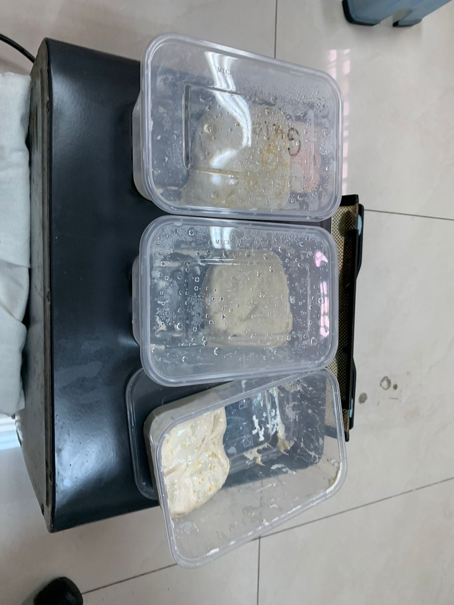
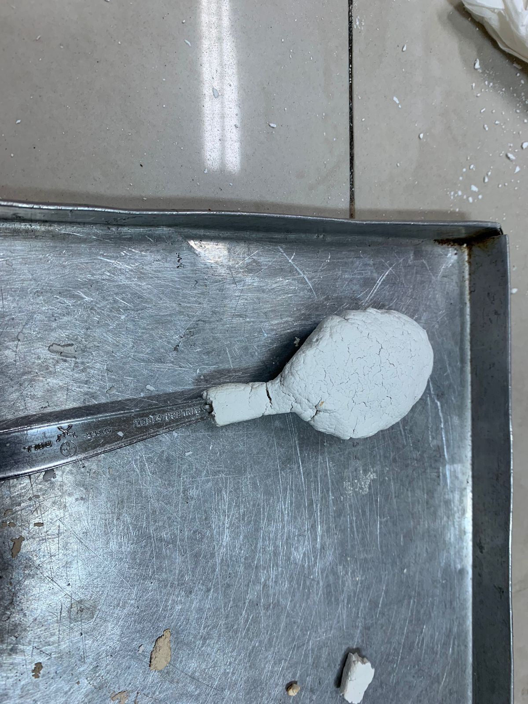
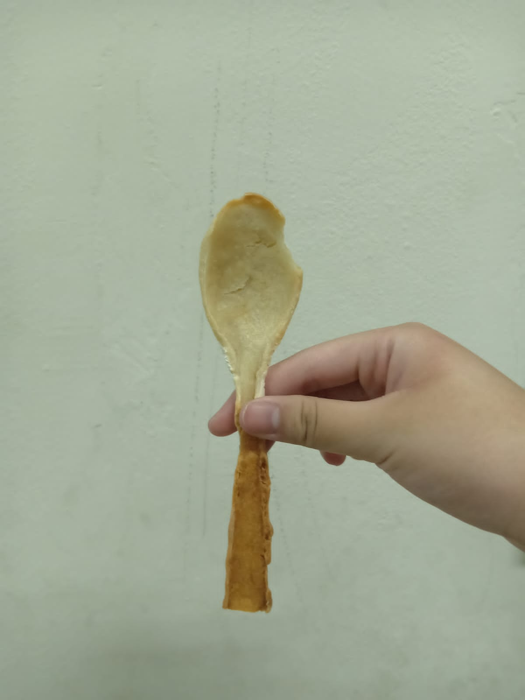

BAB III
PELAKSANAAN DAN HASIL PENELITIAN
3.1 Alat dan Bahan
Berikut adalah alat dan bahan yang diperlukan untuk melakukan percobaan.
Alat:
- Oven
- Loyang
- Pisau
- Sendok Makan
- Cetakan Sendok
- Mangkuk
Bahan:
- 100g Tepung Sorgum
- 100g Tepung Nasi
- 100g Tepung Gandum
- Air Secukupnya
- Gula Pasir (untuk membuat sendok yang terasa manis, optional )
3.2 Prosedur Kerja
Langkah-langkah pembuatan sendok biodegradable adalah sebagai berikut :
- Masukkan tepung sorgum, tepung nasi, dan tepung gandum ke dalam mangkuk.
- Campurlah adonan
- Pipihkan adonan sampai tebalnya kira-kira 2/3 cm
- Cetak adonan menggunakan cetakan (sendok)
- Panggang adonan pada suhu 190 derajat selama kurang lebih 30 menit
- Sendok biodegradable siap digunakan
3.2 Procedure
Here are the ways to make a biodegradable spoon:
- Add in the sorghum flour, rice flour, and wheat flour to the mixture.
- Mix the batter.
- Flatten the dough until it is about 2/3 cm
- Form the dough using a mold
- Bake the dough at 190 degrees for about 30 minutes
- The biodegradable spoon is ready to use
3.3 Data Penelitian
Pada tabel berikut ini dijelaskan mengenai beberapa percobaan yang sudah peneliti lakukan.
| No. | Percobaan | Gambar | Hasil | Alasan |
| 1. | Pertama |  | Gagal | Pada percobaan pertama, kami gagal untuk membuat sendok karena kita membiarkan adonan kami selama seminggu sehingga adonan kering dan tidak bisa dibentuk |
| 2. | Kedua |  | Gagal | Percobaan kedua kami juga gagal karena kita hanya menggunakan tepung nasi. Seharusnya kami menggunakan tepung sorgum dan tepung gandum juga |
| 3. | Ketiga |  | Berhasil | Pada percobaan ketiga, kami menggunakan ketiga tepung yang kita perlukan yaitu tepung sorgum, tepung gandum, dan tepung nasi. |
Tabel 3.1